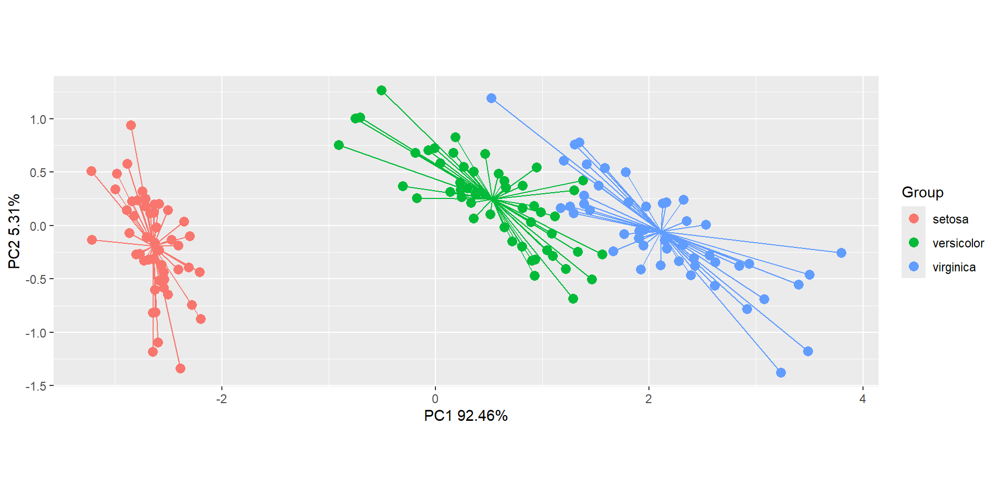

Lolipop plots
Ahora si graficamos….
ggplot(df, aes(x = x, y = Species)) +
geom_segment(aes(xend = y, yend = Species),
color = "gray", linewidth = 1) +
geom_point(aes(x = y),
size = 7.5, shape = 21, fill = "purple") +
geom_text(aes(x = y, label = round(y, 2)),
color = "white", size = 2.8) +
theme_minimal()+
xlab("Promedio de Sepal Length")
Gráficos de ordenación

$df_ord
x y Group
site1 -2.684125626 -0.319397247 setosa
site2 -2.714141687 0.177001225 setosa
site3 -2.888990569 0.144949426 setosa
site4 -2.745342856 0.318298979 setosa
site5 -2.728716537 -0.326754513 setosa
site6 -2.280859633 -0.741330449 setosa
site7 -2.820537751 0.089461385 setosa
site8 -2.626144973 -0.163384960 setosa
site9 -2.886382732 0.578311754 setosa
site10 -2.672755798 0.113774246 setosa
site11 -2.506947091 -0.645068899 setosa
site12 -2.612755231 -0.014729939 setosa
site13 -2.786109266 0.235112000 setosa
site14 -3.223803744 0.511394587 setosa
site15 -2.644750390 -1.178764636 setosa
site16 -2.386039034 -1.338062330 setosa
site17 -2.623527875 -0.810679514 setosa
site18 -2.648296706 -0.311849145 setosa
site19 -2.199820324 -0.872839039 setosa
site20 -2.587986400 -0.513560309 setosa
site21 -2.310256215 -0.391345936 setosa
site22 -2.543705229 -0.432996063 setosa
site23 -3.215939416 -0.133468070 setosa
site24 -2.302733182 -0.098708855 setosa
site25 -2.355754049 0.037281860 setosa
site26 -2.506668907 0.146016880 setosa
site27 -2.468820073 -0.130951489 setosa
site28 -2.562319906 -0.367718857 setosa
site29 -2.639534715 -0.312039980 setosa
site30 -2.631989387 0.196961225 setosa
site31 -2.587398477 0.204318491 setosa
site32 -2.409932497 -0.410924264 setosa
site33 -2.648862334 -0.813363820 setosa
site34 -2.598736749 -1.093145759 setosa
site35 -2.636926878 0.121322348 setosa
site36 -2.866241652 -0.069364472 setosa
site37 -2.625238050 -0.599370021 setosa
site38 -2.800684115 -0.268643738 setosa
site39 -2.980502044 0.487958344 setosa
site40 -2.590006314 -0.229043837 setosa
site41 -2.770102426 -0.263527534 setosa
site42 -2.849368705 0.940960574 setosa
site43 -2.997406547 0.341926057 setosa
site44 -2.405614485 -0.188871429 setosa
site45 -2.209489238 -0.436663142 setosa
site46 -2.714451427 0.250208204 setosa
site47 -2.538148259 -0.503771144 setosa
site48 -2.839462168 0.227945569 setosa
site49 -2.543085750 -0.579410022 setosa
site50 -2.703359782 -0.107706082 setosa
site51 1.284825689 -0.685160470 versicolor
site52 0.932488532 -0.318333638 versicolor
site53 1.464302322 -0.504262815 versicolor
site54 0.183317720 0.827959012 versicolor
site55 1.088103258 -0.074590675 versicolor
site56 0.641669084 0.418246872 versicolor
site57 1.095060663 -0.283468270 versicolor
site58 -0.749122670 1.004890961 versicolor
site59 1.044131826 -0.228361900 versicolor
site60 -0.008745404 0.723081905 versicolor
site61 -0.507840884 1.265971191 versicolor
site62 0.511698557 0.103981235 versicolor
site63 0.264976508 0.550036464 versicolor
site64 0.984934510 0.124817854 versicolor
site65 -0.173925372 0.254854209 versicolor
site66 0.927860781 -0.467179494 versicolor
site67 0.660283762 0.352969666 versicolor
site68 0.236104993 0.333610767 versicolor
site69 0.944733728 0.543145551 versicolor
site70 0.045226976 0.583834377 versicolor
site71 1.116283177 0.084616852 versicolor
site72 0.357888418 0.068925032 versicolor
site73 1.298183875 0.327787308 versicolor
site74 0.921728922 0.182737794 versicolor
site75 0.714853326 -0.149055944 versicolor
site76 0.900174373 -0.328504474 versicolor
site77 1.332024437 -0.244440876 versicolor
site78 1.557802155 -0.267495447 versicolor
site79 0.813290650 0.163350301 versicolor
site80 -0.305583778 0.368262190 versicolor
site81 -0.068126492 0.705172132 versicolor
site82 -0.189622472 0.680286764 versicolor
site83 0.136428712 0.314032438 versicolor
site84 1.380026436 0.420954287 versicolor
site85 0.588006443 0.484287420 versicolor
site86 0.806858313 -0.194182315 versicolor
site87 1.220690882 -0.407619594 versicolor
site88 0.815095236 0.372037060 versicolor
site89 0.245957680 0.268524397 versicolor
site90 0.166413217 0.681926725 versicolor
site91 0.464800288 0.670711545 versicolor
site92 0.890815198 0.034464444 versicolor
site93 0.230548024 0.404385848 versicolor
site94 -0.704531759 1.012248228 versicolor
site95 0.356981495 0.504910093 versicolor
site96 0.331934480 0.212654684 versicolor
site97 0.376215651 0.293218929 versicolor
site98 0.642576008 -0.017738190 versicolor
site99 -0.906469865 0.756093367 versicolor
site100 0.299000842 0.348897806 versicolor
site101 2.531192728 0.009849109 virginica
site102 1.415235877 0.574916348 virginica
site103 2.616676016 -0.343903151 virginica
site104 1.971531053 0.179727904 virginica
site105 2.350005920 0.040260947 virginica
site106 3.397038736 -0.550836673 virginica
site107 0.521232244 1.192758727 virginica
site108 2.932587069 -0.355500003 virginica
site109 2.321228817 0.243831502 virginica
site110 2.916750967 -0.782791949 virginica
site111 1.661774154 -0.242228408 virginica
site112 1.803401953 0.215637617 virginica
site113 2.165591796 -0.216275585 virginica
site114 1.346163579 0.776818347 virginica
site115 1.585928224 0.539640714 virginica
site116 1.904456375 -0.119250692 virginica
site117 1.949689059 -0.041943260 virginica
site118 3.487055364 -1.175739330 virginica
site119 3.795645422 -0.257322973 virginica
site120 1.300791713 0.761149636 virginica
site121 2.427817913 -0.378196013 virginica
site122 1.199001105 0.606091528 virginica
site123 3.499920039 -0.460674099 virginica
site124 1.388766132 0.204399327 virginica
site125 2.275430504 -0.334990606 virginica
site126 2.614090474 -0.560901355 virginica
site127 1.258508161 0.179704795 virginica
site128 1.291132059 0.116668651 virginica
site129 2.123608723 0.209729477 virginica
site130 2.388003016 -0.464639805 virginica
site131 2.841672778 -0.375269167 virginica
site132 3.230673661 -1.374165087 virginica
site133 2.159437642 0.217277579 virginica
site134 1.444161242 0.143413410 virginica
site135 1.781294810 0.499901681 virginica
site136 3.076499932 -0.688085678 virginica
site137 2.144243314 -0.140064201 virginica
site138 1.905098149 -0.049300526 virginica
site139 1.169326339 0.164990262 virginica
site140 2.107611143 -0.372287872 virginica
site141 2.314154705 -0.183651279 virginica
site142 1.922267801 -0.409203467 virginica
site143 1.415235877 0.574916348 virginica
site144 2.563013375 -0.277862603 virginica
site145 2.418746183 -0.304798198 virginica
site146 1.944109795 -0.187532303 virginica
site147 1.527166615 0.375316983 virginica
site148 1.764345717 -0.078858855 virginica
site149 1.900941614 -0.116627959 virginica
site150 1.390188862 0.282660938 virginica
$df_mean.ord
Group x y
1 setosa -2.6424155 -0.19088505
2 versicolor 0.5332066 0.24554983
3 virginica 2.1092089 -0.05466479
$df_ellipse
Group x y
1 setosa -2.762529162 0.275695389
2 setosa -2.750613337 0.274774699
3 setosa -2.738270505 0.272016263
4 setosa -2.725549377 0.267430967
5 setosa -2.712500157 0.261036907
6 setosa -2.699174345 0.252859317
7 setosa -2.685624531 0.242930471
8 setosa -2.671904191 0.231289554
9 setosa -2.658067473 0.217982506
10 setosa -2.644168983 0.203061845
11 setosa -2.630263573 0.186586455
12 setosa -2.616406121 0.168621358
13 setosa -2.602651316 0.149237453
14 setosa -2.589053442 0.128511240
15 setosa -2.575666163 0.106524516
16 setosa -2.562542313 0.083364052
17 setosa -2.549733687 0.059121253
18 setosa -2.537290832 0.033891792
19 setosa -2.525262857 0.007775241
20 setosa -2.513697230 -0.019125333
21 setosa -2.502639594 -0.046703763
22 setosa -2.492133590 -0.074851211
23 setosa -2.482220680 -0.103456591
24 setosa -2.472939986 -0.132407012
25 setosa -2.464328134 -0.161588219
26 setosa -2.456419111 -0.190885047
27 setosa -2.449244131 -0.220181875
28 setosa -2.442831510 -0.249363082
29 setosa -2.437206555 -0.278313502
30 setosa -2.432391466 -0.306918883
31 setosa -2.428405247 -0.335066331
32 setosa -2.425263627 -0.362644761
33 setosa -2.422979007 -0.389545334
34 setosa -2.421560402 -0.415661886
35 setosa -2.421013411 -0.440891346
36 setosa -2.421340193 -0.465134146
37 setosa -2.422539458 -0.488294610
38 setosa -2.424606474 -0.510281334
39 setosa -2.427533081 -0.531007547
40 setosa -2.431307732 -0.550391451
41 setosa -2.435915528 -0.568356549
42 setosa -2.441338285 -0.584831938
43 setosa -2.447554602 -0.599752600
44 setosa -2.454539946 -0.613059647
45 setosa -2.462266748 -0.624700565
46 setosa -2.470704515 -0.634629411
47 setosa -2.479819947 -0.642807000
48 setosa -2.489577069 -0.649201060
49 setosa -2.499937374 -0.653786357
50 setosa -2.510859976 -0.656544793
51 setosa -2.522301766 -0.657465483
52 setosa -2.534217591 -0.656544793
53 setosa -2.546560423 -0.653786357
54 setosa -2.559281551 -0.649201060
55 setosa -2.572330771 -0.642807000
56 setosa -2.585656583 -0.634629411
57 setosa -2.599206397 -0.624700565
58 setosa -2.612926736 -0.613059647
59 setosa -2.626763455 -0.599752600
60 setosa -2.640661945 -0.584831938
61 setosa -2.654567355 -0.568356549
62 setosa -2.668424807 -0.550391451
63 setosa -2.682179612 -0.531007547
64 setosa -2.695777486 -0.510281334
65 setosa -2.709164765 -0.488294610
66 setosa -2.722288614 -0.465134146
67 setosa -2.735097241 -0.440891346
68 setosa -2.747540095 -0.415661886
69 setosa -2.759568071 -0.389545334
70 setosa -2.771133698 -0.362644761
71 setosa -2.782191334 -0.335066331
72 setosa -2.792697338 -0.306918883
73 setosa -2.802610248 -0.278313502
74 setosa -2.811890942 -0.249363082
75 setosa -2.820502794 -0.220181875
76 setosa -2.828411817 -0.190885047
77 setosa -2.835586797 -0.161588219
78 setosa -2.841999418 -0.132407012
79 setosa -2.847624373 -0.103456591
80 setosa -2.852439461 -0.074851211
81 setosa -2.856425681 -0.046703763
82 setosa -2.859567301 -0.019125333
83 setosa -2.861851921 0.007775241
84 setosa -2.863270526 0.033891792
85 setosa -2.863817516 0.059121253
86 setosa -2.863490734 0.083364052
87 setosa -2.862291469 0.106524516
88 setosa -2.860224454 0.128511240
89 setosa -2.857297846 0.149237453
90 setosa -2.853523196 0.168621358
91 setosa -2.848915400 0.186586455
92 setosa -2.843492643 0.203061845
93 setosa -2.837276326 0.217982506
94 setosa -2.830290982 0.231289554
95 setosa -2.822564180 0.242930471
96 setosa -2.814126413 0.252859317
97 setosa -2.805010981 0.261036907
98 setosa -2.795253859 0.267430967
99 setosa -2.784893553 0.272016263
100 setosa -2.773970952 0.274774699
101 setosa -2.762529162 0.275695389
102 versicolor 1.129420430 -0.087790570
103 versicolor 1.128243939 -0.070045422
104 versicolor 1.124719106 -0.051054764
105 versicolor 1.118859844 -0.030893544
106 versicolor 1.110689276 -0.009641327
107 versicolor 1.100239647 0.012618012
108 versicolor 1.087552198 0.035796626
109 versicolor 1.072677000 0.059803041
110 versicolor 1.055672758 0.084542514
111 versicolor 1.036606582 0.109917408
112 versicolor 1.015553715 0.135827582
113 versicolor 0.992597245 0.162170780
114 versicolor 0.967827769 0.188843037
115 versicolor 0.941343042 0.215739089
116 versicolor 0.913247587 0.242752791
117 versicolor 0.883652284 0.269777532
118 versicolor 0.852673931 0.296706656
119 versicolor 0.820434787 0.323433889
120 versicolor 0.787062085 0.349853748
121 versicolor 0.752687530 0.375861967
122 versicolor 0.717446784 0.401355905
123 versicolor 0.681478927 0.426234946
124 versicolor 0.644925906 0.450400906
125 versicolor 0.607931980 0.473758413
126 versicolor 0.570643147 0.496215284
127 versicolor 0.533206569 0.517682894
128 versicolor 0.495769991 0.538076518
129 versicolor 0.458481158 0.557315674
130 versicolor 0.421487232 0.575324432
131 versicolor 0.384934211 0.592031720
132 versicolor 0.348966354 0.607371603
133 versicolor 0.313725608 0.621283540
134 versicolor 0.279351054 0.633712628
135 versicolor 0.245978351 0.644609815
136 versicolor 0.213739207 0.653932094
137 versicolor 0.182760854 0.661642676
138 versicolor 0.153165551 0.667711128
139 versicolor 0.125070096 0.672113504
140 versicolor 0.098585369 0.674832427
141 versicolor 0.073815893 0.675857168
142 versicolor 0.050859423 0.675183682
143 versicolor 0.029806556 0.672814628
144 versicolor 0.010740380 0.668759355
145 versicolor -0.006263862 0.663033867
146 versicolor -0.021139060 0.655660761
147 versicolor -0.033826509 0.646669134
148 versicolor -0.044276137 0.636094472
149 versicolor -0.052446706 0.623978509
150 versicolor -0.058305968 0.610369062
151 versicolor -0.061830800 0.595319839
152 versicolor -0.063007292 0.578890234
153 versicolor -0.061830800 0.561145086
154 versicolor -0.058305968 0.542154428
155 versicolor -0.052446706 0.521993208
156 versicolor -0.044276137 0.500740992
157 versicolor -0.033826509 0.478481652
158 versicolor -0.021139060 0.455303038
159 versicolor -0.006263862 0.431296623
160 versicolor 0.010740380 0.406557150
161 versicolor 0.029806556 0.381182256
162 versicolor 0.050859423 0.355272082
163 versicolor 0.073815893 0.328928884
164 versicolor 0.098585369 0.302256627
165 versicolor 0.125070096 0.275360575
166 versicolor 0.153165551 0.248346873
167 versicolor 0.182760854 0.221322133
168 versicolor 0.213739207 0.194393008
169 versicolor 0.245978351 0.167665776
170 versicolor 0.279351054 0.141245916
171 versicolor 0.313725608 0.115237697
172 versicolor 0.348966354 0.089743760
173 versicolor 0.384934211 0.064864718
174 versicolor 0.421487232 0.040698758
175 versicolor 0.458481158 0.017341251
176 versicolor 0.495769991 -0.005115620
177 versicolor 0.533206569 -0.026583230
178 versicolor 0.570643147 -0.046976854
179 versicolor 0.607931980 -0.066216009
180 versicolor 0.644925906 -0.084224767
181 versicolor 0.681478927 -0.100932056
182 versicolor 0.717446784 -0.116271938
183 versicolor 0.752687530 -0.130183876
184 versicolor 0.787062085 -0.142612964
185 versicolor 0.820434787 -0.153510151
186 versicolor 0.852673931 -0.162832430
187 versicolor 0.883652284 -0.170543012
188 versicolor 0.913247587 -0.176611464
189 versicolor 0.941343042 -0.181013840
190 versicolor 0.967827769 -0.183732763
191 versicolor 0.992597245 -0.184757504
192 versicolor 1.015553715 -0.184084018
193 versicolor 1.036606582 -0.181714964
194 versicolor 1.055672758 -0.177659691
195 versicolor 1.072677000 -0.171934203
196 versicolor 1.087552198 -0.164561097
197 versicolor 1.100239647 -0.155569470
198 versicolor 1.110689276 -0.144994808
199 versicolor 1.118859844 -0.132878845
200 versicolor 1.124719106 -0.119269397
201 versicolor 1.128243939 -0.104220175
202 versicolor 1.129420430 -0.087790570
203 virginica 2.815107033 -0.445450427
204 virginica 2.813714105 -0.426855300
205 virginica 2.809540816 -0.406791308
206 virginica 2.802603637 -0.385337633
207 virginica 2.792929945 -0.362578943
208 virginica 2.780557919 -0.338605057
209 virginica 2.765536386 -0.313510588
210 virginica 2.747924627 -0.287394574
211 virginica 2.727792149 -0.260360081
212 virginica 2.705218406 -0.232513803
213 virginica 2.680292485 -0.203965636
214 virginica 2.653112759 -0.174828246
215 virginica 2.623786492 -0.145216627
216 virginica 2.592429423 -0.115247640
217 virginica 2.559165303 -0.085039561
218 virginica 2.524125410 -0.054711606
219 virginica 2.487448032 -0.024383467
220 virginica 2.449277917 0.005825166
221 virginica 2.409765704 0.035795072
222 virginica 2.369067331 0.065407975
223 virginica 2.327343416 0.094547006
224 virginica 2.284758623 0.123097166
225 virginica 2.241481016 0.150945780
226 virginica 2.197681391 0.177982944
227 virginica 2.153532606 0.204101953
228 virginica 2.109208895 0.229199728
229 virginica 2.064885184 0.253177220
230 virginica 2.020736399 0.275939800
231 virginica 1.976936774 0.297397635
232 virginica 1.933659166 0.317466040
233 virginica 1.891074374 0.336065814
234 virginica 1.849350458 0.353123554
235 virginica 1.808652086 0.368571939
236 virginica 1.769139873 0.382350003
237 virginica 1.730969758 0.394403368
238 virginica 1.694292379 0.404684467
239 virginica 1.659252487 0.413152724
240 virginica 1.625988367 0.419774719
241 virginica 1.594631298 0.424524319
242 virginica 1.565305031 0.427382777
243 virginica 1.538125305 0.428338814
244 virginica 1.513199384 0.427388657
245 virginica 1.490625641 0.424536055
246 virginica 1.470493163 0.419792266
247 virginica 1.452881404 0.413176012
248 virginica 1.437859870 0.404713404
249 virginica 1.425487844 0.394437840
250 virginica 1.415814153 0.382389874
251 virginica 1.408876974 0.368617052
252 virginica 1.404703685 0.353173730
253 virginica 1.403310756 0.336120856
254 virginica 1.404703685 0.317525730
255 virginica 1.408876974 0.297461737
256 virginica 1.415814153 0.276008062
257 virginica 1.425487844 0.253249373
258 virginica 1.437859870 0.229275487
259 virginica 1.452881404 0.204181018
260 virginica 1.470493163 0.178065003
261 virginica 1.490625641 0.151030510
262 virginica 1.513199384 0.123184232
263 virginica 1.538125305 0.094636065
264 virginica 1.565305031 0.065498676
265 virginica 1.594631298 0.035887056
266 virginica 1.625988367 0.005918070
267 virginica 1.659252487 -0.024290010
268 virginica 1.694292379 -0.054617964
269 virginica 1.730969758 -0.084946103
270 virginica 1.769139873 -0.115154736
271 virginica 1.808652086 -0.145124643
272 virginica 1.849350458 -0.174737546
273 virginica 1.891074374 -0.203876576
274 virginica 1.933659166 -0.232426736
275 virginica 1.976936774 -0.260275351
276 virginica 2.020736399 -0.287312514
277 virginica 2.064885184 -0.313431524
278 virginica 2.109208895 -0.338529299
279 virginica 2.153532606 -0.362506791
280 virginica 2.197681391 -0.385269370
281 virginica 2.241481016 -0.406727205
282 virginica 2.284758623 -0.426795610
283 virginica 2.327343416 -0.445395385
284 virginica 2.369067331 -0.462453125
285 virginica 2.409765704 -0.477901510
286 virginica 2.449277917 -0.491679573
287 virginica 2.487448032 -0.503732939
288 virginica 2.524125410 -0.514014038
289 virginica 2.559165303 -0.522482295
290 virginica 2.592429423 -0.529104290
291 virginica 2.623786492 -0.533853889
292 virginica 2.653112759 -0.536712348
293 virginica 2.680292485 -0.537668385
294 virginica 2.705218406 -0.536718228
295 virginica 2.727792149 -0.533865626
296 virginica 2.747924627 -0.529121837
297 virginica 2.765536386 -0.522505583
298 virginica 2.780557919 -0.514042975
299 virginica 2.792929945 -0.503767411
300 virginica 2.802603637 -0.491719444
301 virginica 2.809540816 -0.477946622
302 virginica 2.813714105 -0.462503301
303 virginica 2.815107033 -0.445450427
$df_hull
Group x y
1 setosa -2.2094892 -0.43666314
2 setosa -2.1998203 -0.87283904
3 setosa -2.3860390 -1.33806233
4 setosa -2.6447504 -1.17876464
5 setosa -3.2159394 -0.13346807
6 setosa -3.2238037 0.51139459
7 setosa -2.8493687 0.94096057
8 setosa -2.3557540 0.03728186
9 setosa -2.3027332 -0.09870885
10 setosa -2.2094892 -0.43666314
11 versicolor 1.5578022 -0.26749545
12 versicolor 1.4643023 -0.50426282
13 versicolor 1.2848257 -0.68516047
14 versicolor 0.9278608 -0.46717949
15 versicolor -0.1739254 0.25485421
16 versicolor -0.9064699 0.75609337
17 versicolor -0.7491227 1.00489096
18 versicolor -0.5078409 1.26597119
19 versicolor 1.3800264 0.42095429
20 versicolor 1.5578022 -0.26749545
21 virginica 3.4870554 -1.17573933
22 virginica 3.2306737 -1.37416509
23 virginica 1.6617742 -0.24222841
24 virginica 1.1693263 0.16499026
25 virginica 0.5212322 1.19275873
26 virginica 3.7956454 -0.25732297
27 virginica 3.4870554 -1.17573933
$df_spiders
Group cntr.x cntr.y x y
site1 setosa -2.6424155 -0.19088505 -2.684125626 -0.319397247
site2 setosa -2.6424155 -0.19088505 -2.714141687 0.177001225
site3 setosa -2.6424155 -0.19088505 -2.888990569 0.144949426
site4 setosa -2.6424155 -0.19088505 -2.745342856 0.318298979
site5 setosa -2.6424155 -0.19088505 -2.728716537 -0.326754513
site6 setosa -2.6424155 -0.19088505 -2.280859633 -0.741330449
site7 setosa -2.6424155 -0.19088505 -2.820537751 0.089461385
site8 setosa -2.6424155 -0.19088505 -2.626144973 -0.163384960
site9 setosa -2.6424155 -0.19088505 -2.886382732 0.578311754
site10 setosa -2.6424155 -0.19088505 -2.672755798 0.113774246
site11 setosa -2.6424155 -0.19088505 -2.506947091 -0.645068899
site12 setosa -2.6424155 -0.19088505 -2.612755231 -0.014729939
site13 setosa -2.6424155 -0.19088505 -2.786109266 0.235112000
site14 setosa -2.6424155 -0.19088505 -3.223803744 0.511394587
site15 setosa -2.6424155 -0.19088505 -2.644750390 -1.178764636
site16 setosa -2.6424155 -0.19088505 -2.386039034 -1.338062330
site17 setosa -2.6424155 -0.19088505 -2.623527875 -0.810679514
site18 setosa -2.6424155 -0.19088505 -2.648296706 -0.311849145
site19 setosa -2.6424155 -0.19088505 -2.199820324 -0.872839039
site20 setosa -2.6424155 -0.19088505 -2.587986400 -0.513560309
site21 setosa -2.6424155 -0.19088505 -2.310256215 -0.391345936
site22 setosa -2.6424155 -0.19088505 -2.543705229 -0.432996063
site23 setosa -2.6424155 -0.19088505 -3.215939416 -0.133468070
site24 setosa -2.6424155 -0.19088505 -2.302733182 -0.098708855
site25 setosa -2.6424155 -0.19088505 -2.355754049 0.037281860
site26 setosa -2.6424155 -0.19088505 -2.506668907 0.146016880
site27 setosa -2.6424155 -0.19088505 -2.468820073 -0.130951489
site28 setosa -2.6424155 -0.19088505 -2.562319906 -0.367718857
site29 setosa -2.6424155 -0.19088505 -2.639534715 -0.312039980
site30 setosa -2.6424155 -0.19088505 -2.631989387 0.196961225
site31 setosa -2.6424155 -0.19088505 -2.587398477 0.204318491
site32 setosa -2.6424155 -0.19088505 -2.409932497 -0.410924264
site33 setosa -2.6424155 -0.19088505 -2.648862334 -0.813363820
site34 setosa -2.6424155 -0.19088505 -2.598736749 -1.093145759
site35 setosa -2.6424155 -0.19088505 -2.636926878 0.121322348
site36 setosa -2.6424155 -0.19088505 -2.866241652 -0.069364472
site37 setosa -2.6424155 -0.19088505 -2.625238050 -0.599370021
site38 setosa -2.6424155 -0.19088505 -2.800684115 -0.268643738
site39 setosa -2.6424155 -0.19088505 -2.980502044 0.487958344
site40 setosa -2.6424155 -0.19088505 -2.590006314 -0.229043837
site41 setosa -2.6424155 -0.19088505 -2.770102426 -0.263527534
site42 setosa -2.6424155 -0.19088505 -2.849368705 0.940960574
site43 setosa -2.6424155 -0.19088505 -2.997406547 0.341926057
site44 setosa -2.6424155 -0.19088505 -2.405614485 -0.188871429
site45 setosa -2.6424155 -0.19088505 -2.209489238 -0.436663142
site46 setosa -2.6424155 -0.19088505 -2.714451427 0.250208204
site47 setosa -2.6424155 -0.19088505 -2.538148259 -0.503771144
site48 setosa -2.6424155 -0.19088505 -2.839462168 0.227945569
site49 setosa -2.6424155 -0.19088505 -2.543085750 -0.579410022
site50 setosa -2.6424155 -0.19088505 -2.703359782 -0.107706082
site51 versicolor 0.5332066 0.24554983 1.284825689 -0.685160470
site52 versicolor 0.5332066 0.24554983 0.932488532 -0.318333638
site53 versicolor 0.5332066 0.24554983 1.464302322 -0.504262815
site54 versicolor 0.5332066 0.24554983 0.183317720 0.827959012
site55 versicolor 0.5332066 0.24554983 1.088103258 -0.074590675
site56 versicolor 0.5332066 0.24554983 0.641669084 0.418246872
site57 versicolor 0.5332066 0.24554983 1.095060663 -0.283468270
site58 versicolor 0.5332066 0.24554983 -0.749122670 1.004890961
site59 versicolor 0.5332066 0.24554983 1.044131826 -0.228361900
site60 versicolor 0.5332066 0.24554983 -0.008745404 0.723081905
site61 versicolor 0.5332066 0.24554983 -0.507840884 1.265971191
site62 versicolor 0.5332066 0.24554983 0.511698557 0.103981235
site63 versicolor 0.5332066 0.24554983 0.264976508 0.550036464
site64 versicolor 0.5332066 0.24554983 0.984934510 0.124817854
site65 versicolor 0.5332066 0.24554983 -0.173925372 0.254854209
site66 versicolor 0.5332066 0.24554983 0.927860781 -0.467179494
site67 versicolor 0.5332066 0.24554983 0.660283762 0.352969666
site68 versicolor 0.5332066 0.24554983 0.236104993 0.333610767
site69 versicolor 0.5332066 0.24554983 0.944733728 0.543145551
site70 versicolor 0.5332066 0.24554983 0.045226976 0.583834377
site71 versicolor 0.5332066 0.24554983 1.116283177 0.084616852
site72 versicolor 0.5332066 0.24554983 0.357888418 0.068925032
site73 versicolor 0.5332066 0.24554983 1.298183875 0.327787308
site74 versicolor 0.5332066 0.24554983 0.921728922 0.182737794
site75 versicolor 0.5332066 0.24554983 0.714853326 -0.149055944
site76 versicolor 0.5332066 0.24554983 0.900174373 -0.328504474
site77 versicolor 0.5332066 0.24554983 1.332024437 -0.244440876
site78 versicolor 0.5332066 0.24554983 1.557802155 -0.267495447
site79 versicolor 0.5332066 0.24554983 0.813290650 0.163350301
site80 versicolor 0.5332066 0.24554983 -0.305583778 0.368262190
site81 versicolor 0.5332066 0.24554983 -0.068126492 0.705172132
site82 versicolor 0.5332066 0.24554983 -0.189622472 0.680286764
site83 versicolor 0.5332066 0.24554983 0.136428712 0.314032438
site84 versicolor 0.5332066 0.24554983 1.380026436 0.420954287
site85 versicolor 0.5332066 0.24554983 0.588006443 0.484287420
site86 versicolor 0.5332066 0.24554983 0.806858313 -0.194182315
site87 versicolor 0.5332066 0.24554983 1.220690882 -0.407619594
site88 versicolor 0.5332066 0.24554983 0.815095236 0.372037060
site89 versicolor 0.5332066 0.24554983 0.245957680 0.268524397
site90 versicolor 0.5332066 0.24554983 0.166413217 0.681926725
site91 versicolor 0.5332066 0.24554983 0.464800288 0.670711545
site92 versicolor 0.5332066 0.24554983 0.890815198 0.034464444
site93 versicolor 0.5332066 0.24554983 0.230548024 0.404385848
site94 versicolor 0.5332066 0.24554983 -0.704531759 1.012248228
site95 versicolor 0.5332066 0.24554983 0.356981495 0.504910093
site96 versicolor 0.5332066 0.24554983 0.331934480 0.212654684
site97 versicolor 0.5332066 0.24554983 0.376215651 0.293218929
site98 versicolor 0.5332066 0.24554983 0.642576008 -0.017738190
site99 versicolor 0.5332066 0.24554983 -0.906469865 0.756093367
site100 versicolor 0.5332066 0.24554983 0.299000842 0.348897806
site101 virginica 2.1092089 -0.05466479 2.531192728 0.009849109
site102 virginica 2.1092089 -0.05466479 1.415235877 0.574916348
site103 virginica 2.1092089 -0.05466479 2.616676016 -0.343903151
site104 virginica 2.1092089 -0.05466479 1.971531053 0.179727904
site105 virginica 2.1092089 -0.05466479 2.350005920 0.040260947
site106 virginica 2.1092089 -0.05466479 3.397038736 -0.550836673
site107 virginica 2.1092089 -0.05466479 0.521232244 1.192758727
site108 virginica 2.1092089 -0.05466479 2.932587069 -0.355500003
site109 virginica 2.1092089 -0.05466479 2.321228817 0.243831502
site110 virginica 2.1092089 -0.05466479 2.916750967 -0.782791949
site111 virginica 2.1092089 -0.05466479 1.661774154 -0.242228408
site112 virginica 2.1092089 -0.05466479 1.803401953 0.215637617
site113 virginica 2.1092089 -0.05466479 2.165591796 -0.216275585
site114 virginica 2.1092089 -0.05466479 1.346163579 0.776818347
site115 virginica 2.1092089 -0.05466479 1.585928224 0.539640714
site116 virginica 2.1092089 -0.05466479 1.904456375 -0.119250692
site117 virginica 2.1092089 -0.05466479 1.949689059 -0.041943260
site118 virginica 2.1092089 -0.05466479 3.487055364 -1.175739330
site119 virginica 2.1092089 -0.05466479 3.795645422 -0.257322973
site120 virginica 2.1092089 -0.05466479 1.300791713 0.761149636
site121 virginica 2.1092089 -0.05466479 2.427817913 -0.378196013
site122 virginica 2.1092089 -0.05466479 1.199001105 0.606091528
site123 virginica 2.1092089 -0.05466479 3.499920039 -0.460674099
site124 virginica 2.1092089 -0.05466479 1.388766132 0.204399327
site125 virginica 2.1092089 -0.05466479 2.275430504 -0.334990606
site126 virginica 2.1092089 -0.05466479 2.614090474 -0.560901355
site127 virginica 2.1092089 -0.05466479 1.258508161 0.179704795
site128 virginica 2.1092089 -0.05466479 1.291132059 0.116668651
site129 virginica 2.1092089 -0.05466479 2.123608723 0.209729477
site130 virginica 2.1092089 -0.05466479 2.388003016 -0.464639805
site131 virginica 2.1092089 -0.05466479 2.841672778 -0.375269167
site132 virginica 2.1092089 -0.05466479 3.230673661 -1.374165087
site133 virginica 2.1092089 -0.05466479 2.159437642 0.217277579
site134 virginica 2.1092089 -0.05466479 1.444161242 0.143413410
site135 virginica 2.1092089 -0.05466479 1.781294810 0.499901681
site136 virginica 2.1092089 -0.05466479 3.076499932 -0.688085678
site137 virginica 2.1092089 -0.05466479 2.144243314 -0.140064201
site138 virginica 2.1092089 -0.05466479 1.905098149 -0.049300526
site139 virginica 2.1092089 -0.05466479 1.169326339 0.164990262
site140 virginica 2.1092089 -0.05466479 2.107611143 -0.372287872
site141 virginica 2.1092089 -0.05466479 2.314154705 -0.183651279
site142 virginica 2.1092089 -0.05466479 1.922267801 -0.409203467
site143 virginica 2.1092089 -0.05466479 1.415235877 0.574916348
site144 virginica 2.1092089 -0.05466479 2.563013375 -0.277862603
site145 virginica 2.1092089 -0.05466479 2.418746183 -0.304798198
site146 virginica 2.1092089 -0.05466479 1.944109795 -0.187532303
site147 virginica 2.1092089 -0.05466479 1.527166615 0.375316983
site148 virginica 2.1092089 -0.05466479 1.764345717 -0.078858855
site149 virginica 2.1092089 -0.05466479 1.900941614 -0.116627959
site150 virginica 2.1092089 -0.05466479 1.390188862 0.282660938
$plot
stat_summary() y stat_smooth()
Esta es una capa que nos permite poner desviaciones estándar o líneas que representan el promedio de los datos, por ejemplo:

ggpubr()